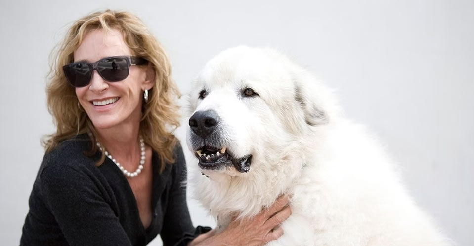
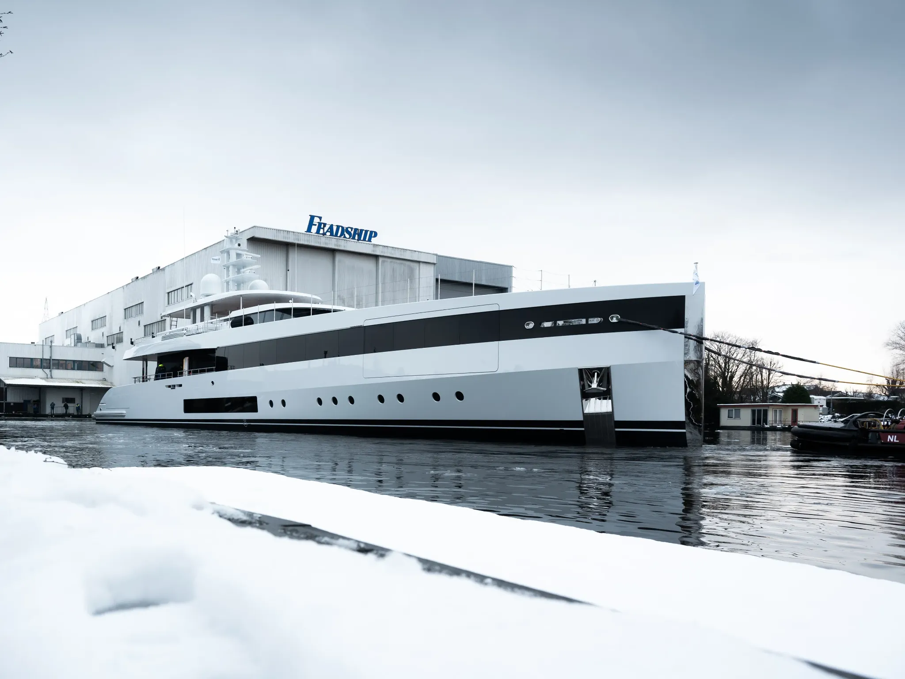
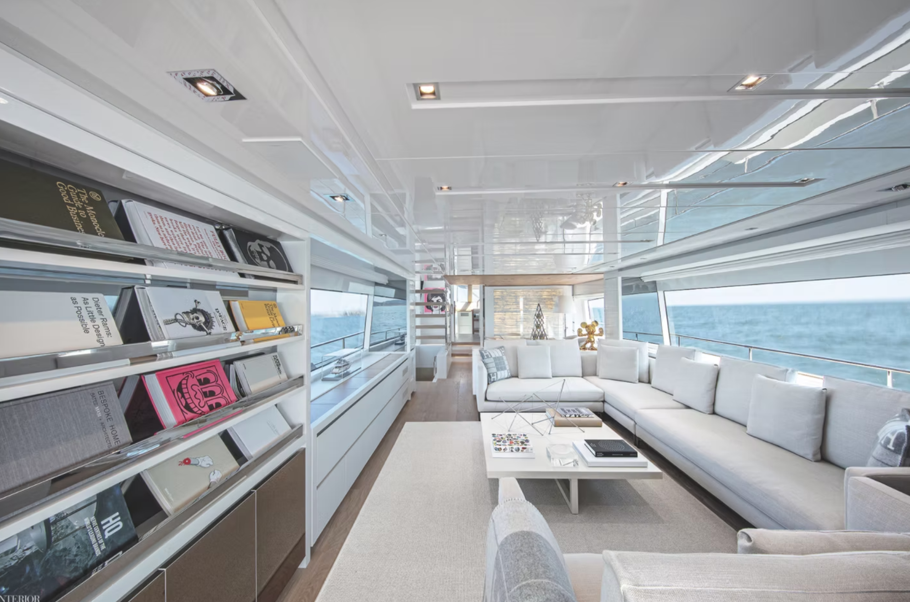
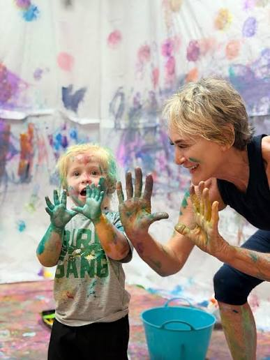
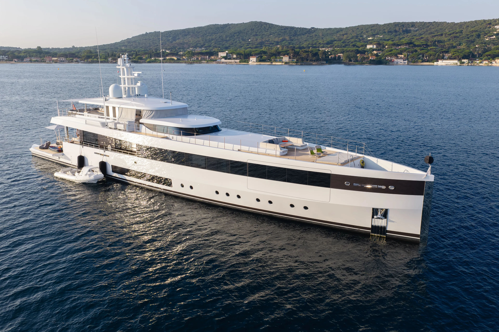
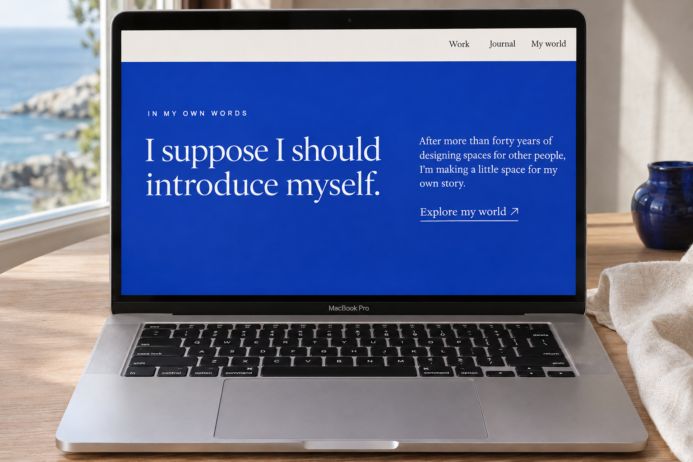
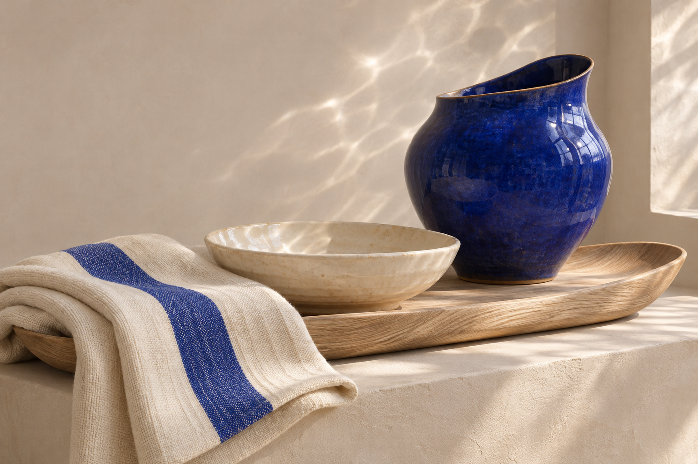

Life comes first.
Your conversations return to furniture, movement, storage and everyday routines. That practical intelligence belongs at the centre of the identity.
An identity for the way you see, the spaces you make, and the stories you are ready to tell.
Explore the direction ↓Marty, the starting point is already there: a practiced eye, a direct way of speaking, and an instinct for how people actually live aboard.
The opportunity is to make that point of view recognizable everywhere your name appears—from the first page of a proposal to a story told in your own words.
Your conversations return to furniture, movement, storage and everyday routines. That practical intelligence belongs at the centre of the identity.
Your voice can be direct and funny. We want to leave room for the small, dry observation that makes a story unmistakably yours.
The new identity opens with the work and ideas that occupy you now. Your history gives those ideas depth; the story keeps moving forward.
A room aboard a yacht has to do more than make a beautiful photograph. It has to hold a conversation, an ordinary morning, a family, a life.
We propose an identity with that same generosity: a strong name, open compositions, tactile materials and a maritime language drawn from structure and movement.
A full name carries authorship. The proposed wordmark gives Marty Lowe an editorial presence: assured at the top of a page, intimate at the end of a note.
The approved direction introduces more elasticity into the name: curved tension, softer joins and an open, forward-moving rhythm. The ocean is present in the way the letters behave.
The M gains a gentle inward tension. The r and t soften the transition into the y. The descender releases the name into a longer curve. In Lowe, the L lifts, the o leans and the w exchanges sharp points for rounded turns. An open e keeps the ending light.
This study sets the direction for a custom drawing. The final pass will resolve every contour and the Ma, ar, rt, ty, Lo, ow and we spacing pairs, then check small reproduction, embroidery and blind embossing. All applications below use this approved direction.
The name needs a full-size expression for editorial openings and a clear reading on invoices, captions and small objects. Reverse colour and reduced-size versions are part of the drawing process.
Approved lettering applied at two scales. Final vector artwork will be prepared and checked for production.
ML belongs on a notebook spine, a sample label, a favicon or the reverse of a card. It should feel related to the full name through its proportions and terminals.
The compact signature carries the curved M and the rising terminal of the L into one balanced composition. The final drawing must preserve both initials at small sizes and in blind embossing. When space allows, the full name remains the first choice.
The sea gives us movement. A hull gives us structure. A passage gives us a way through. Together, these become a family of graphic forms with a shared logic.
A long, quiet gesture. It anchors a title, divides a chapter or carries a restrained transition.
Nested curves suggest volume and construction. A crop becomes an endpaper, a folder lining or a large editorial edge.
An opening movement. It introduces a new story or gives a film title a sense of direction.
Offset horizontal strokes create a broken rhythm. Used sparingly, they bring texture to a quiet surface.
An open frame for a material or detail. The frame supports the image and leaves room around it.
Two related curves describe a route. It connects stages in a process or related entries in a journal.
Blue connects the direction to the water, the sky and your own preferences. Cotton, deep ink and a pale blue give it a practical range across print and screen.
#234FC4#F6F5F0#182B3A#DCE8F2Blue makes the memorable gesture: a cover, a signature, a chapter opening. Cotton gives photographs and longer reading a calm ground.
Deep ink carries body text and technical information. Open sky supports secondary fields. Print colours will be matched to the chosen stocks and finishes.
A serif gives stories and titles an expressive rhythm. Large, open settings make room for personality without needing a different typeface for every idea.
A clear sans serif handles navigation, specifications, dates and figures. This shared hierarchy makes a website caption and a studio document feel related.
Typography direction: an editorial serif paired with a precise sans serif. Tiempos and Söhne are candidates for evaluation; this concept uses system fonts for reliable offline viewing.
First person. Specific memories. A little dry humour. The writing should leave room for the slight awkwardness of talking about yourself for the first time.
“I’ve spent a lot of time thinking about how other people live. Writing about myself is taking a little more getting used to.”
Proposed voice sample for your response—not a transcript quotation.
A furniture decision, an early job, something that made you laugh. Concrete details make the story feel spoken.
Explain what you saw, what you changed and why. Readers can reach their own conclusions about the experience behind it.
Stories can share what you learned and help younger designers see a possible path of their own.
The identity has to work where the work happens: proposals, selections, approvals and invoices. The same visual care should make those documents easier to use.
Each example shows the intended hierarchy. Project terms, responsibilities and commercial fields will be tailored to your workflow.
A clear introduction to the project: how the spaces will be used, the atmosphere they should create and the decisions that shape the work.
| Section | Purpose |
|---|---|
| Project understanding | People, spaces, intended use and priorities. |
| Design approach | The point of view, supported by a concise visual direction. |
| Scope & programme | Phases, outputs, review points and dependencies. |
| Commercial framework | Fees, allowances and terms in clearly separated fields. |
Each phase connects a deliverable to a responsible party and a decision. Boundaries and assumptions remain visible.
| Phase | Example output | Review point |
|---|---|---|
| Concept | Spatial priorities, mood and material direction | Direction approval |
| Development | Layouts, details and coordinated selections | Design review |
| Procurement coordination | Item schedule, supplier information and tracking | Release approval |
| Installation review | Site observations and outstanding items | Close-out review |
Separate fields define included spaces, revision allowances, exclusions, client inputs and yard coordination.
| Field | Record |
|---|---|
| Item & location | Upholstery / Main salon seating |
| Supplier & reference | Supplier, collection and product code |
| Finish & dimensions | Approved colour, finish, width and quantity |
| Sample record | Linked sample ID and approval date |
| Technical information | Relevant supplier documentation and yard requirements |
| Status | For review / approved / superseded |
A decision record connects the selected item to the exact revision presented. Comments and follow-up actions stay attached to it.
| Record | Detail |
|---|---|
| Document / item | Reference and revision being reviewed |
| Decision | Approved / approved with comments / revise |
| Comments | Specific changes or conditions |
| Follow-up | Responsible party and required date |
| Confirmation | Name, date and signature field |
| Invoice details | Project details |
|---|---|
| Invoice no. [reference] Issue date [date] Due date [date] | Project study 01 Client [name] Billing period [period] |
| Description | Amount |
|---|---|
| Design services / agreed milestone | — |
| Approved reimbursable expenses | — |
| Subtotal / applicable tax | — |
| Total due [currency] | — |
Payment instructions, the project reference and an administrative contact appear together at the foot of the document.
Proposal, scope, fee schedule and programme.
Concept presentation, material boards, FF&E schedules and supplier correspondence.
Approvals, meeting notes, change requests and progress reports.
Invoices, outstanding-item records, care information and handover folders.
Paper, cloth and a well-made folder give the identity a physical presence. Each object should feel useful, personal and considered.
A little note.
From the studio of Marty LoweA softly textured card. A clothbound notebook that lives on a working desk. A sample envelope with a legible reference. The experience should feel as resolved in the hand as it does on a screen.
Introduce the work with confidence, then give it room to unfold. The Feadship exterior and a separate interior show how the same visual language can carry different projects, with each post able to stand on its own.

Interiors. Ideas. A life in design.
A little color goes a long way.



Proposed profile composition. Project photographs, personal moments and editorial notes share one signature. No account statistics are implied.
A substantial, beautifully edited portfolio magazine. A publication to open across a table, leave with a collaborator and return to long after the meeting.
49.50 metres
Interior design — Marty Lowe
Exterior design — Studio De Voogt
2026
A first look from the shipyard. Interior photography to follow.
Photography © FeadshipThis spread demonstrates how an interior chapter will feel: a generous room photograph, quiet typography and space for the story behind the design.
Interior supplied as a layout example. Project name and credits to be confirmed. This is not a Graycliffs interior.
Portfolio layout / ConceptProposed 240 × 300 mm format, generous margins, tactile uncoated cover and image-led interior pages. Page count follows the approved project archive.
A concise introduction, project index, chapters for the approved portfolio, concise notes in your voice, collaborator credits and selected press.
The portfolio documents the projects and can be updated. The book carries your story, your beliefs and the lessons you want to share.
The website becomes an edited view of your work and thinking. You lead: a photograph, your voice and an invitation into your world. Projects, stories and the archive follow.
I’m Marty. I design interiors and tend to notice the details.

After more than forty years of designing spaces for other people, I’m making a little space for my own story.
Explore my world ↗Website composition / desktop mockup. Proposed first-person copy for your review. Personal photograph supplied; project imagery © Feadship. This is a visual prototype, not a live website.

Journal introduction / Photorealistic concept mockup. Proposed first-person copy for your review.
Your photograph establishes the character of the site before a visitor sees a yacht. Color, curiosity and the pleasure of making become part of the introduction.
The home page then moves through selected work, a personal story and a wider world of ideas. A future collection can join that world when there is something real to share.
The personal photograph gives the opening warmth and ease. The more playful painting image can appear in the journal and personal archive.
I’m Marty. I design interiors and tend to notice the details.
Selected projects with a full visual story, the design decisions and accurate collaborator credits.
A first-person introduction, current portrait and a selective timeline with photographs from your archive.
Personal stories, material observations and the practical details that rarely make it into the finished photograph.
Selected coverage, publication dates and links that preserve the original context.
A direct, discreet route to your studio, with a separate contact for press and editorial enquiries if useful.
A visitor can move from a project to its related story, then into the archive. Mobile keeps that same reading order. Motion stays quiet and never controls the pace of reading.
Over the years, you’ve developed a way of seeing: how you bring materials together, where you introduce color, what makes a space feel personal.
That perspective is what people come to you for. It also gives your name value beyond any single project.
Marty Lowe is the name of your practice—and the foundation of a wider world of intellectual property.
Your life, your observations and the stories behind your eye.
Objects that bring your perspective into someone’s everyday life.
Your creative direction, developed with specialist makers.
Possibilities to explore together. The identity gives them a shared signature, whenever you decide the time is right.
A book about you: the people, places, objects and everyday observations that have shaped your eye. Told in your voice, with room for humour, curiosity and whatever comes next.
Personal photographs sit beside sketches, collected objects and finished rooms. A material becomes the beginning of a story. A project becomes a way of talking about people.
Working title and illustrative spreads. Personal stories, photographs and final editorial content would be developed with you. This personal book is separate from the project portfolio magazine.
Fluid forms. Tactile surfaces. A considered touch of blue. A small family of objects that feels connected to the spaces you make—and useful in everyday life.

Pale wood, a continuous edge and a generous curve. A place for the things you reach for every day.
A deep-blue vessel and a softly irregular bowl. Forms to develop with a specialist ceramic studio.
Natural texture, woven rhythm and a stripe with character. An idea that could extend into throws and cushions.
A focused collaboration could pair your creative direction with a partner’s craft, production and distribution. The first step is discovering which objects you would most like to bring into the world.
Illustrative product concepts, not existing products or announced partnerships. A separate proposal would define design development, partners, production and commercial terms after our conversation.
The book and collection are invitations to imagine what your name could hold. We would develop a separate proposal once we have explored the possibilities together.
The work in front of us
Build a clear identity and show how it lives across your studio, portfolio and digital presence.
A possible next chapter
Define a personal publication, a product capsule or a collaboration around your interests, pace and ambition.
| Area | Concept exploration | Following direction approval |
|---|---|---|
| Identity | Wordmark, ML, colour, typography and maritime form studies. | Final vector drawings, optical corrections, reproduction tests and usage guidance. |
| Studio | Proposal, scope, specification, approval and invoice layouts. | Editable templates built around your actual workflow and document requirements. |
| Editorial | Website direction, story formats, social covers and film-title language. | Approved copy, image selection, responsive layouts and production assets. |
| Physical | Stationery, notebooks, folders, samples and presentation objects. | Stock and finish samples, printer specifications and artwork for selected pieces. |
| Book | Cover direction and an initial editorial structure. | A separately developed publication brief, content selection and book design. |
This is a direction to respond to. Your reaction will help us decide what to refine, what to simplify and where to take the system next.
Does this feel like your signature? Does the balance of confidence and warmth feel right?
Which forms feel closest to your way of seeing? Where would you like more character—or more restraint?
Which documents and objects would make the most immediate difference to you and your team?
This proposal is informed by your conversations and the direction discussed with CRUDA. Proposed copy is editorial development, not a verbatim statement unless explicitly identified.
Drew Frist / Kelly Wearstler informs the breadth of application across identity, editorial, photography and digital media. Pentagram / La Nouvelle Maison informs the principle of deriving a visual system from the subject itself. Neither reference is an endorsement or an attribution of this work.
Visual boards are generated concept studies. The approved fluid lettering is reproduced consistently across the live applications. The photoreal book is a conceptual rendering of that direction; final vector artwork and production proofs remain a separate production step. They are not production artwork or documented tests. New website and portfolio mockups use the supplied personal photograph and published Feadship imagery. The book, MacBook scene and Home & Decor capsule are generated visual concepts. Final publication permissions, project imagery and credits will be confirmed with the studio.
The live typography and document examples demonstrate hierarchy and behaviour; they do not establish final type licensing, project obligations or payment terms.
Each post
has a point.
Image, title, detail. A changing rhythm of scale and composition gives each story its own character, with the same quiet signature throughout.
A life on
the water.
Room for
living.
I suppose
I should
introduce
myself.
Meet Graycliffs, a 49.5-metre Feadship with interiors by my studio. For now, a first look from the shipyard. There will be more to share when the interior photography is ready.
There is rather more to an interior than the finished photograph.
Make an entrance.
One strong image and the project name. A generous crop, a quiet signature and clear design credits.
Show the decisions.
Follow with approved interior photography: a room, a material, a detail. Pair each with one specific observation from your project conversation.
Keep you present.
Alternate projects with your voice and life. The feed becomes an edited view of your world, with the work as one part of the picture.
Concept feed, not a publishing schedule. Feadship exterior supplied for this proposal; project details from the official Graycliffs page. Project 717 / 2026. The interior is a separate project used to demonstrate layout. Graycliffs interior photography is not yet available. Project names and photographic credits for the separate interior remain to be confirmed. Personal image supplied for this proposal.